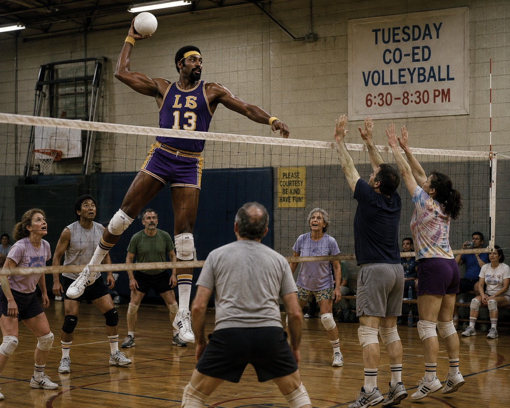
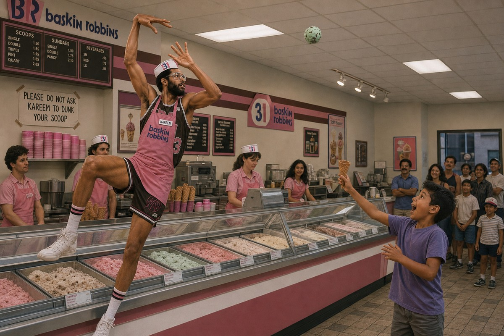
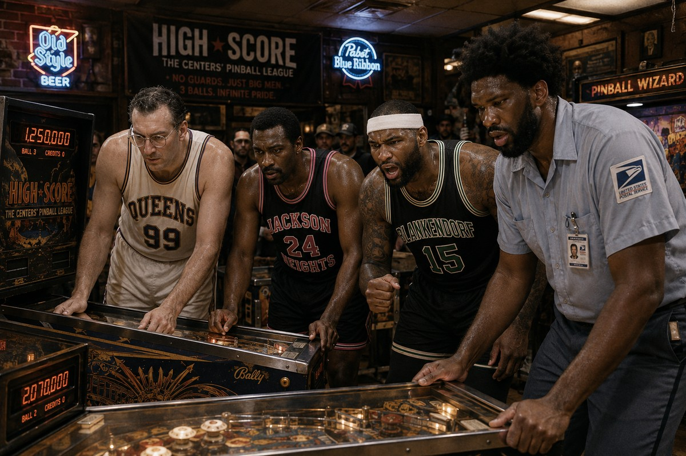
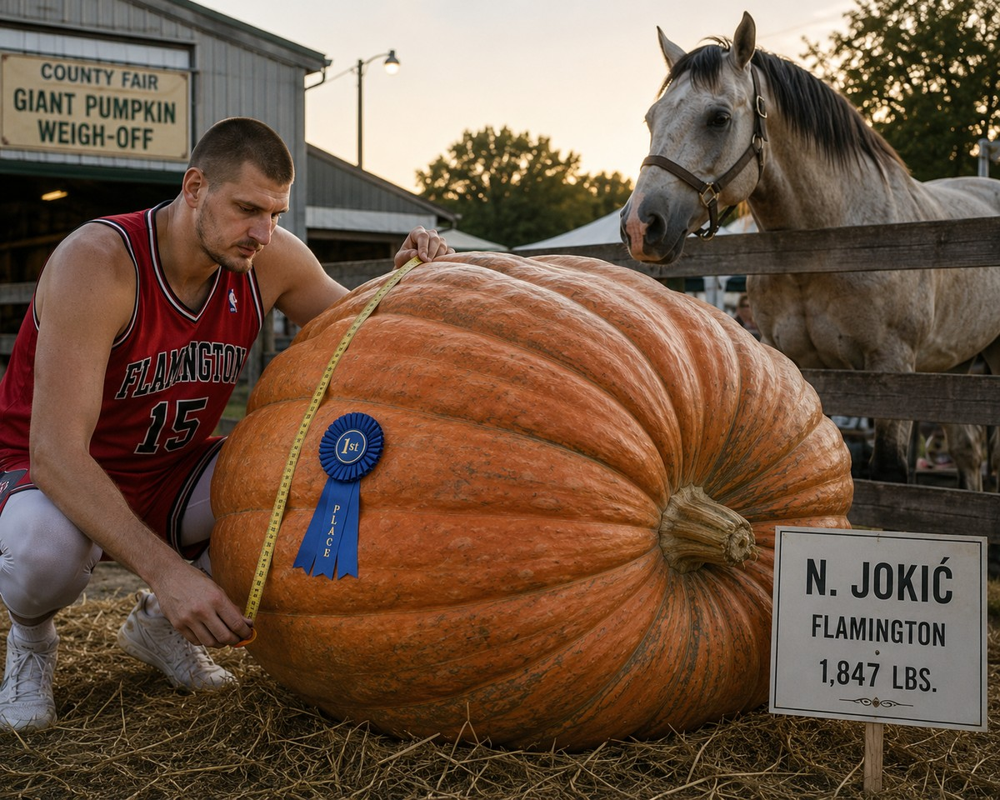
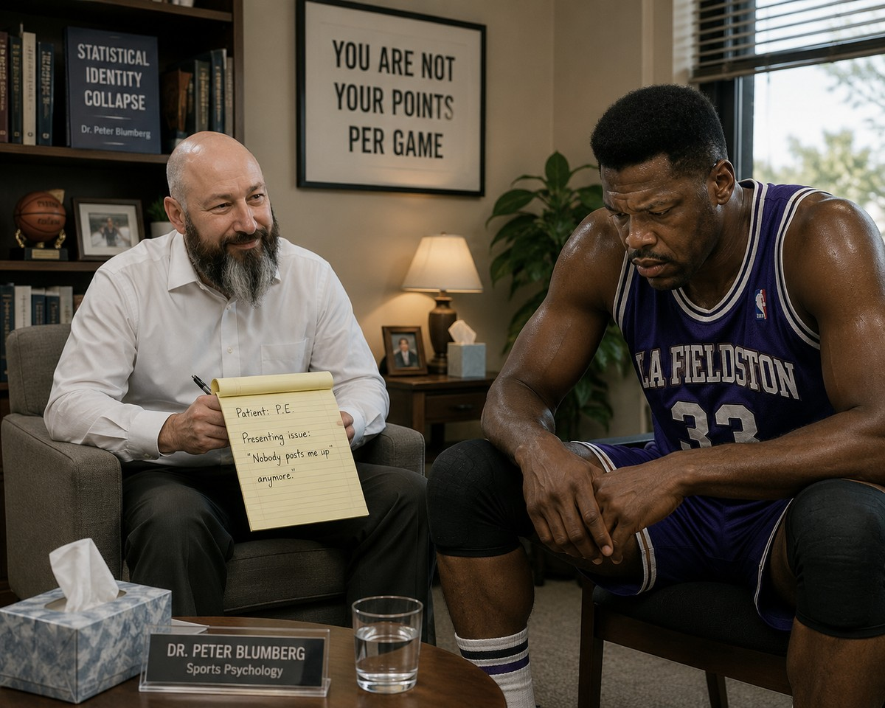

Tuesday nights, a church basement two blocks from the arena. Mikan chairs. Nobody outside the room is supposed to know.
There's also a less statistical explanation making the rounds — that some of the league's great scorers simply stopped needing the box score to validate them. Or that they still need it badly, and have just gone looking for it somewhere else entirely.
“It's Been Fourteen Games Since My Last Thirty”
They meet Tuesday nights in the basement of a church two blocks off the Flamington arena. Folding chairs, a coffee urn nobody trusts, and a hand-lettered sign taped to the door that just says BIGS. Nobody outside the room is supposed to know the meetings happen at all, which is exactly why everybody in the league already does.
George Mikan chairs it, by seniority if nothing else. He opens the same way most weeks.
“It's been fourteen games since my last thirty-point night,” he said, to a round of murmured solidarity that would not sound out of place in any other basement in any other city, for any other kind of meeting. “I used to be the whole offense. Now I'm a Tuesday-night confession.”
The format doesn't change much. Someone shares. The room nods. Somebody else admits they've been eyeing box scores from forty years ago just to feel something. Nobody is cured by the end of the hour, and nobody expects to be — the point, several attendees say, isn't fixing it. It's saying it out loud in a room full of people who used to average what you used to average, and don't anymore either.
“You go around a whole season getting complimented on your rebounding,” one recent attendee said, declining to be named for fear of “breaking the room's trust.” “And no one asks how it feels. This is the one place they ask.”

The One Room Where Wilt Is Still Wilt
Not every big man in the league is looking for a room to grieve in. At least one found a gym where nothing has to be mourned at all.
Wilt Chamberlain took up competitive volleyball after his basketball career ended — a matter of public record, not league legend — and by most accounts became good enough, fast enough, to help push the sport toward the mainstream popularity it enjoys today. He is, by a wide margin, the most successful basketball-to-volleyball crossover the sport has ever produced.
He's kept it up this season, and teammates say it shows in how he talks about it. There's no fourteen-games-since language when the subject turns to volleyball. No confession, no basement, no folding chair.
“Different sport, same net effect,” Chamberlain said, allowing himself the pun. “I'm still the tallest guy in the building. I still get the ball whenever I want it. Nobody's decided I'm better used standing under the rim collecting boards over there. I go, I play, I dominate. It's the simplest my week gets.”
It's not lost on his teammates that the one place Chamberlain seems entirely at peace is the one place nobody's tried to redefine his role for him.

The Most Unstoppable Shot in Basketball, Relocated
Nobody ever solved the skyhook. Not in twenty seasons, not with a hand in his face, not with two. Kareem Abdul-Jabbar built the single most unblockable shot the sport has ever seen, and to this day, nobody has found a real answer for it.
Which makes it all the stranger that the one man on the floor who can stop him from using it is Michael Jordan — not by guarding it, but by glaring at it.
“Every time Kareem winds up for that thing in a game, Mike just stops and stares at him,” one teammate said. “Like, are you kidding me right now? I'm Michael Jordan. I've got a movie with Bugs Bunny. I've got sneakers with my name on them. And you're out here flinging some over-the-shoulder hook shot instead of just giving me the ball?”
Kareem, for his part, has mostly stopped arguing about it on the floor. He's found another place to use the shot instead — one where nobody glares at him for it.
Several nights a week, he can be found behind the counter of a Baskin-Robbins in Queens, sky-hooking scoops of ice cream from a good three feet back into waffle cones, to the visible delight of everyone in line. Regulars say he never misses. Somebody clocked it on a phone once and the scoop landed dead center, no rim, no drip, no wasted motion — the same shot, the same release, just softer on the landing.
“Out there, I get the look from Mike,” Abdul-Jabbar said. “In here, I get a kid asking for extra sprinkles and a high five. I know which one I look forward to more.”

High Score
For a smaller contingent, the fix wasn't therapy, or a new sport, or a basement confessional. It was finding a scoreboard that still goes up instead of down.
A pinball league has quietly formed among several of the league's centers, meeting at a bar with a back room full of machines old enough to remember when these men were averaging thirty a night themselves. The core group — George Mikan, Moses Malone, and DeMarcus Cousins — is an odd mix of eras, but nobody in the room seems to notice the decades between them. The scoreboard doesn't check ID.
There's a fourth regular, too, and his story cuts differently than the others'. Joel Embiid never got a call from a single franchise in this league — no team ever offered him a roster spot, for reasons nobody in the room quite agrees on — and he's spent the season delivering mail for the postal service, second-floor walkups and all, still showing up to pinball night in uniform straight off his route. He's not chasing a number he used to have. He's chasing one he never got the chance to.
“You put a quarter in, and the score just climbs,” Cousins said, watching a six-digit number tick over on a machine older than every player standing around it except Mikan. “Nobody's grading me on efficiency. Nobody's telling me my value is in what I do off the ball. I hit the ball. The number goes up. That's it. That's the whole thing.”
Embiid, for his part, has reportedly become the group's most dangerous player almost overnight — a fact Malone attributes less to skill than to spite. “Joel treats every flipper like somebody just passed him over in a draft that doesn't even exist yet,” Malone said. “I've never seen a man take a silver ball this personally. Then again, I get it. He didn't even get the rejection letter. He just never got the call.”
Mikan, the group's elder statesman by several decades, holds the standing high score on the oldest machine in the room and does not let anyone forget it. “I was putting up numbers before any of these men were born,” he said. “Turns out I still can. Just not the way anybody expects anymore.”
League standings, unofficially, are taken almost as seriously as the real ones. There is reportedly a running grudge between Embiid and Cousins over a disputed high score that has outlasted several actual playoff races.
“Out there,” Cousins said, nodding toward the arena a few blocks away, “I get a rebound and a pat on the back. In here, I get a hundred thousand points and my name on a piece of tape at the top of the machine. I know which one feels better.” Embiid, mid-route with a mail bag still over one shoulder, didn't say much. He just nodded at the machine and racked another game.

Not Everyone Found a Hobby. Some Found a Pumpkin.
Of everyone who's found a second life away from the box score, nobody's commitment runs stranger, or deeper, than Nikola Jokić's.
Jokić has taken up competitive giant-pumpkin growing this season, and by all accounts it is not a passing interest. He's a fixture at the county fair circuit around Flamington, and this fall he walked away with first place at the Giant Pumpkin Weigh-Off — a gourd that, per the posted sign, tipped the scale at 1,847 pounds. He did not do it alone. His horses were there for all of it.
“He talks to the horses about the pumpkins,” one teammate said. “Not near them. To them. Like they're consulting on it.”
Nobody in the locker room has fully worked out whether the horses are actual collaborators in the growing process or simply present for moral support, and Jokić hasn't clarified much when asked. He measured the winning pumpkin himself, tape in hand, with the same unhurried, unbothered expression he wears setting up a possession in the fourth quarter — like the size of the thing was never really in question.
“You spend your whole career being told you're big,” Jokić said, one hand still resting on the pumpkin. “Then one day nobody's throwing you the ball, and you realize — I can still make something enormous. Nobody's boxing out my pumpkin.”
Asked whether he missed carrying more of the offensive load, he didn't really answer the question. He just glanced over at the horse, like it might.

“You Are Not Your Points Per Game”
If the pinball leagues and the pumpkin growing are the coping mechanisms, Dr. Peter Blumberg is the one trying to get to the root of it.
Blumberg runs a small practice out of Flamington specializing in what he calls “statistical identity collapse” — athletes whose entire sense of self was constructed around a number that quietly stopped being about them. He says he's seen more centers walk through his door this season than in the previous three combined.
“These are men who spent their whole careers being told, implicitly, that their value was the box score,” Blumberg said. “And then one day the box score changes, and nobody explains why, and they're left asking: if I'm not averaging thirty anymore, who exactly am I?”
His approach, by his own description, borrows equally from cognitive therapy and something closer to a guided meditation. Sessions reportedly end with a mantra he has each player repeat: I am not my points per game.
“Some of them get there faster than others,” he said. “The ones with pumpkins usually get there fastest, honestly. They've already found something else enormous to be proud of.”
Whether any of this is contentment or resignation depends on who in the locker room — or the church basement, or the pinball bar — you ask.
No Clean Answer
The honest conclusion is probably some combination of all three: a league that rewards two-way wings over back-to-the-basket volume, a class of defensive giants who've made rim protection the more valuable path to winning, and a handful of legendary scorers who — willingly or not — have found other ways to spend their competitive energy, from a church basement to a volleyball net to a pinball machine older than most of them. Whatever the mix, the numbers don't lie. The most dominant collection of offensive big men basketball has ever produced is sitting behind a 13.3-point-per-game leader, and most of them have found somewhere else to put the rest of it.
Mikan's still got the high score on that pinball machine, though. Some things don't change.